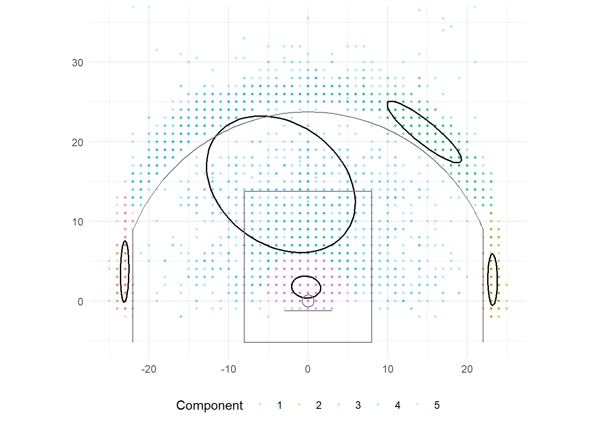

write the likelihood of a Gaussian mixture model and interpret its parameters;
derive the E-step and M-step of the EM algorithm and explain why the log-likelihood never decreases;
implement EM for a two-dimensional mixture and interpret the responsibilities as soft cluster memberships;
explain the covariance families in mclust and choose among them with BIC;
show that k-means is a limiting case of EM; and
describe the Bayesian view of mixtures, including Dirichlet priors and the Dirichlet process.
2 Clustering as a probability model
k-means says nothing about how the data were generated. A mixture model does: each observation comes from one of components, chosen with probabilities , and each component is a distribution. With Gaussian components, the density of an observation is
where is the multivariate normal density. The parameters are the mixing weights, the component means, and the component covariances. The log-likelihood of independent observations is
The log of a sum has no closed-form maximizer, which is why a dedicated algorithm is needed.
2.1 Responsibilities
Introduce the unobserved component label . By Bayes’ rule, the posterior probability that observation came from component is the responsibility
Responsibilities are the soft cluster memberships. A player with and is between two archetypes, and the model says so instead of forcing a choice.
3 The EM algorithm
The expectation-maximization algorithm alternates two steps from an initial parameter guess.
E-step. Compute the responsibilities from the current parameters.
M-step. Maximize the expected complete-data log-likelihood, which gives closed-form updates:
Each update is a weighted mean or weighted covariance, with the responsibilities as weights.
3.1 Why it works
For any distribution over the labels, Jensen’s inequality gives a lower bound on the log-likelihood,
with equality when . The E-step makes the bound tight at the current parameters; the M-step raises the bound. Together they raise the log-likelihood, so exact EM does not decrease . Under regularity conditions it approaches a stationary point, which need not be a global maximum. Degenerate covariance matrices are a separate failure mode. As with k-means, the local maximum reached depends on the start.
4 EM from scratch: shot locations
A two-dimensional example makes the algorithm visible. Shot locations on the half court have structure near the rim and three-point line. The R helper uses a small covariance floor and checks for density underflow. For high-dimensional or ill-conditioned inputs, use a package implementation or log-scale density calculations. Its BIC uses , where smaller is better. The mclust example later uses the opposite sign, where larger is better.
Log-likelihood over EM iterations for the five-component fit. It rises at every step and levels off.
fit5 <- fits[[4]]ellipse <-function(mean, covariance, points =80) { angles <-seq(0, 2* pi, length.out = points) circle <-cbind(cos(angles), sin(angles)) eig <-eigen(covariance) transformed <- circle %*%diag(sqrt(eig$values)) %*%t(eig$vectors)data.frame(x = transformed[, 1] + mean[[1]], y = transformed[, 2] + mean[[2]])}ellipses <-lapply(seq_len(5), function(k) ellipse(fit5$means[k, ], fit5$covariances[[k]]) %>%mutate(component =factor(k))) %>%bind_rows()ggplot() +geom_point(data = shot_sample %>%mutate(component =factor(fit5$cluster)), aes(court_x, court_y, color = component), alpha =0.25, size =0.7) +geom_path(data = ellipses, aes(x, y, group = component), color ="black", linewidth =0.7) +court_layers() +labs(x =NULL, y =NULL, color ="Component") +theme_minimal() +theme(legend.position ="bottom")

A five-component Gaussian mixture on shot locations. Ellipses are one-standard-deviation contours; points are colored by the component with the largest responsibility.
The mixture recovers shot zones without being told where the three-point line is, and unlike k-means it can make the rim component tight and the above-the-break component wide, because each component has its own covariance.
A shot at the edge of the paint is partly “rim” and partly “short midrange”, and the responsibilities record exactly how much of each.
5 k-means as a limiting case
Fix every covariance to with the same and equal weights . The responsibilities become
and as each goes to 1 for the nearest center and 0 elsewhere. The E-step becomes the k-means assignment step and the M-step becomes the k-means update. Lloyd k-means corresponds to the hard-assignment limit with equal mixing weights and a common spherical variance. Finite-variance EM uses soft responsibilities, so the algorithms are not identical. Everything k-means assumes, spherical clusters of equal spread with hard membership, is a restriction the mixture model can relax.
6 Covariance families and model selection
A full covariance in dimensions has parameters per component, which is for the 14-feature profiles. With 360 players and several components that is too many. mclust parameterizes each covariance through its eigendecomposition,
where is the volume, the shape (a diagonal matrix of normalized eigenvalues), and the orientation. Each of the three can be equal across components (E), variable (V), or, for shape and orientation, the identity (I). Model EII is spherical with equal volume (the k-means geometry); VVV is fully unrestricted; VEE shares shape and orientation but lets volumes differ, and so on.
The Bayesian information criterion trades fit against parameters,
where is the number of parameters (mclust reports it in this sign convention, so larger is better). BIC penalizes both extra components and richer covariance structures, and for mixtures it is the standard selection tool.
BIC by number of components for several covariance families on the player profiles.
The selected family shares shape and orientation across components and lets only the volume vary; fully unrestricted covariances need more parameters than 360 players can support, and BIC says so. The chosen number of components is a statement about how many Gaussians describe the density of players, which is not the same as how many archetypes an analyst wants; the two questions coincide only when the archetypes are actual Gaussian bumps.
uncertainty is . The players at the top of this list are the ones the model cannot place, which is the same information a low silhouette gave in Tutorial 6.2 but now on a probability scale.
The mixture model is a hierarchical model, and Lectures 4 and 5 supply the language. Write it as
with priors on the parameters:
The Dirichlet is the conjugate prior for the mixing weights, exactly as the beta was for one proportion in Lecture 4. Three things follow.
EM estimates parameters. Ordinary mixture EM maximizes the observed-data likelihood. Responsibilities condition on those fitted parameters and have a plug-in latent-variable interpretation. Full Bayes integrates over parameter uncertainty as well. Gibbs updates use full conditional distributions derived from both likelihood and priors, rather than simply randomizing the M-step.
Priors regularize. A suitable proper covariance prior or an explicit eigenvalue floor can discourage or exclude component collapse. A good initialization alone cannot guarantee protection against a singular solution. The prior must control behavior near zero variance.
The number of components can be learned. With a symmetric Dirichlet prior whose concentration shrinks as grows, the model in the limit is a Dirichlet process mixture. For a sample of size , it allows 1 through occupied components and puts a posterior distribution on that count, which replaces the BIC search with posterior inference. The price is heavier computation and a result that depends on the concentration parameter.
NoteLabel switching
The mixture likelihood is unchanged by relabeling the components, so any sampler that explores the posterior fully will visit every permutation of the labels. Posterior means of are then meaningless unless the labels are aligned across draws. It is the mixture-model version of the identification problem in Lecture 5, and the usual remedies are an ordering constraint or post-hoc relabeling.
8 Practice
Write the E-step for a mixture of two univariate normals with known parameters and compute for , , , , .
Why can the mixture log-likelihood be unbounded above, and what stops EM from finding that solution in practice?
Explain in one sentence why BIC prefers a diagonal covariance family for the player profiles.
What does a responsibility of 0.5 mean for a player, and what would k-means have reported?
TipShow answers
; the two densities are equal, so .
A component can center on one point and shrink its variance toward zero, sending its density to infinity; a good starting point alone does not prevent collapse. Use an appropriate covariance prior, covariance constraints, or a positive eigenvalue floor.
Fourteen dimensions require 105 covariance parameters per component under a full model, which 360 players cannot support without overfitting.
Conditional on the fitted mixture parameters, that component has probability 0.5 for the player. With two components, the other also has probability 0.5. With more components, their remaining probabilities sum to 0.5. k-means would report a hard label without this probability distribution.
9 Key takeaways
A Gaussian mixture is a generative model whose responsibilities are soft memberships.
EM alternates computing responsibilities with weighted parameter updates and never decreases the log-likelihood.
Lloyd k-means is a hard-assignment, small-variance limit under equal mixing weights and spherical covariance.
Covariance families and BIC control complexity; the selected number of components describes the density, not necessarily the analyst’s archetypes.
The Bayesian mixture adds Dirichlet and inverse-Wishart priors, Gibbs sampling, and the Dirichlet process for an unbounded number of components.